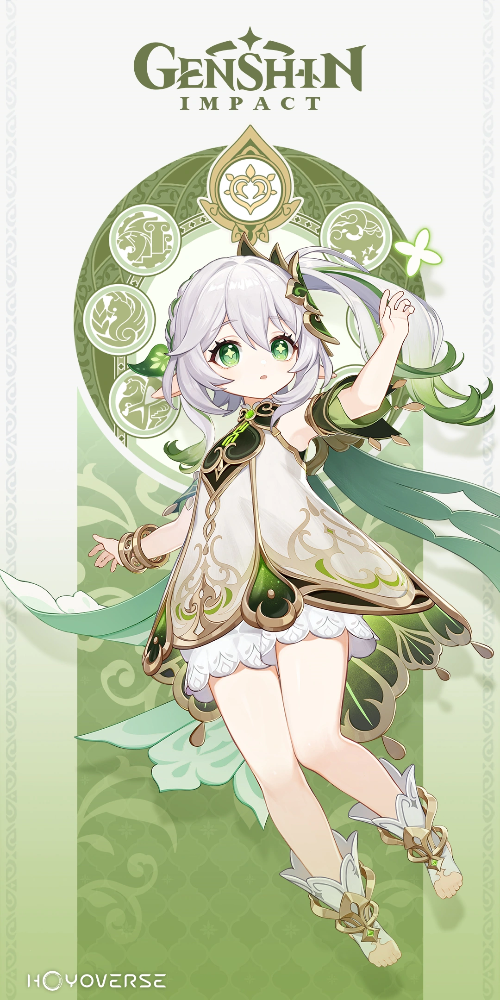
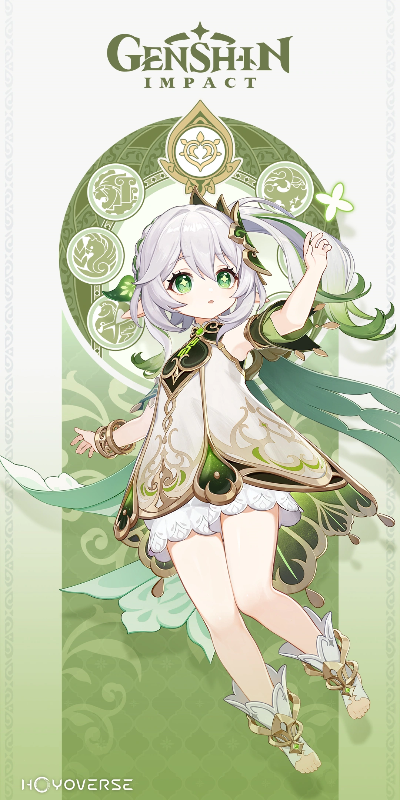

Una astróloga de gran habilidad y orgullo igualmente grande, se ha instalado en Mondstadt para
evitar la ira de su maestra después de leer sin saberlo el diario de este última.
Llegó por primera vez en la Versión 1.0 en el gachapón.
Aunque todavía no es una caballera, busca unirse algún día a los Caballeros de Favonius
sirviendo
primero como una sirvienta obediente.
Llegó por primera vez en la Versión 1.0 en el gachapón.

Ella es una persona misteriosa que dice que trabaja para el Ministerio de Asuntos Civiles. Sin
embargo, en realidad es la dueña del Salón de Té Yanshang.
Ella controla una marioneta mientras medita dentro del Plano de la eutimia. Ella es el
recipiente
mortal de Beelzebul, la actual Arconte Electro de Inazuma.
Hizo su primera aparición como PNJ en la Versión 2.0 y llegó por primera vez en la Versión 2.1
en el
gachapón "Reino de la serenidad".

Ella es el recipiente de la Reina Menor Kusanali, la actual Arconte Dendro. Habiendo sido liberada de su extenso confinamiento en el Santuario Surasthana, ahora se esfuerza por tener una presencia más fuerte en Sumeru.